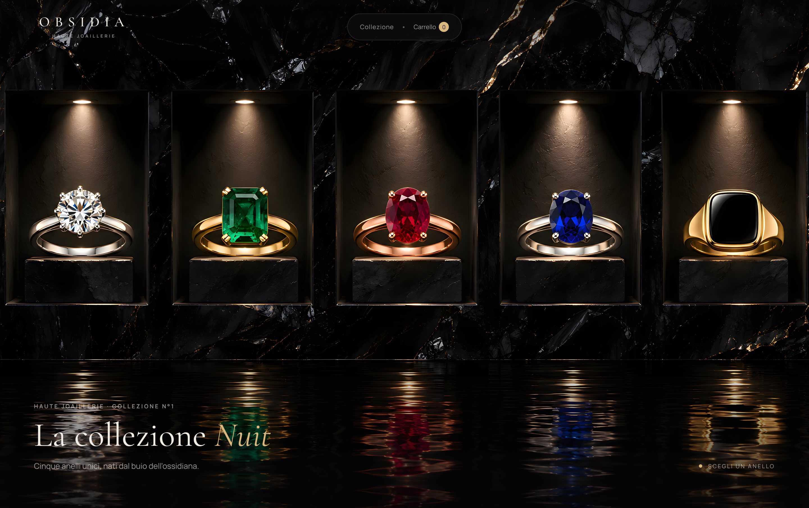

OBSIDIA

Concept di sito per una maison di alta gioielleria di fantasia. La collezione è esposta in un muro di ossidiana con cinque nicchie illuminate: scegliendo un anello la pagina si avvicina al primo piano e apre la scheda, con il gioiello in 3D da ruotare e osservare da ogni lato grazie a Three.js. Marchio, prodotti e immagini sono inventati.